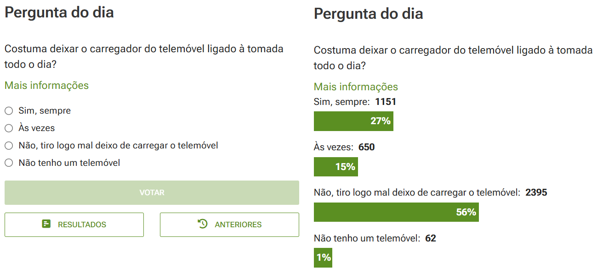

2 Recolha de Dados
2.1 Populações e amostras
Ao delinear os objetivos de uma análise (ou questão de investigação), pelo menos implicitamente, é também definida uma população-alvo (ou simplesmente, população), sendo esta definida como o conjunto de entidades para as quais temos interesse em estudar determinadas características.
Para ilustrar o conceito, eis alguns exemplos de questões de investigação:
- Qual a tensão média de rutura das vigas metálicas do tipo X?
- Qual a percentagem de eleitores que vai votar na candidatura Y?
- Qual o nível médio de satisfação dos visitantes do evento Z?
- Um novo fármaco para tratar a dor, reduz ou não o número médio de queixas dos doentes?
Em todos estes exemplos fica definida qual a população-alvo. Por exemplo, na questão 1, a população alvo são todas a vigas metálicas do tipo X. Já na questão 2 a população alvo são todos os potenciais eleitores.
Estes dois exemplos deixam perceber as dificuldades em observar toda uma população e responder à questão de forma exata. No caso da questão 1, estamos a tratar de uma população potencialmente infinita, eventualmente incluindo as vigas que ainda não foram fabricadas, mas que se tenciona fabricar com as mesmas características. Adicionalmente, para determinar a tensão de rotura será necessário destruir a viga.
No segundo exemplo, o número de eleitores pode ser muito elevado e pode não se dispor de tempo e recursos para os sondar a todos. Pode ainda haver eleitores que, por qualquer motivo, não se consigam encontrar ou recusem participar no estudo.
Este tipo de dificuldades conduz a que, raramente, se possa estudar a totalidade das populações. O processo de estudar a totalidade da população é designado por censo. As principais dificuldades de um censo são:
- Populações muito grandes, havendo dificuldade em identificar ou localizar todos os elementos.
- Populações dinâmicas, em constante alteração.
Por estes motivos, e para poder continuar a responder às questões de investigação, é necessário basear a resposta no estudo de uma amostra.
Uma amostra é um subconjunto de observações escolhidas na população-alvo. Tipicamente, uma amostra apenas contém uma pequena fração da população, sendo a dimensão determinada tendo em conta considerações da teoria estatística e considerações económicas e práticas.
Importante
População-alvo (ou população): conjunto de entidades para as quais se pretende estudar determinadas características.
Amostra: subconjunto de entidades, selecionadas na população, que são efetivamente estudadas.
Nota
Se quisermos ser pedantes rigorosos, uma população estatística (ou amostra) é o conjunto de observações ou medições que se faz sobre determinada característica (dados) e não os objetos ou entidades que se estão a estudar. Frequentemente, sobre as mesmas entidades, são recolhidos dados sobre várias características, ou seja, temos várias populações que se poderiam designar por populações conjuntas. Por esse motivo, como não há grandes riscos de confusão, o termo população é utilizado, de forma imprecisa, para designar o conjunto de entidades.
2.1.1 Representatividade
Para que, a partir de uma amostra, se possa inferir com confiança sobre as populações, a amostra deve ser representativa. Uma amostra representativa, tanto quanto possível, aproxima as características da população.
Importante
Uma amostra representativa é o oposto da observação circunstancial dos fenómenos. Nem uma inundação fora do comum confirma que existe aquecimento global, nem um janeiro frio prova que o aquecimento global não existe. Para estudar um fenómeno tão complexo é necessário um conjunto alargado e criterioso de medições (amostra representativa) e uma análise correta.
Uma das melhores formas de garantir a representatividade da amostra é selecionar as entidades a observar ao acaso. Uma amostra deste tipo designa-se por amostra aleatória ou amostra probabilística. Numa amostra aleatória todos os elementos da população têm a mesma possibilidade de vir a pertencer à amostra. As secções 2.4 e 2.5 apresentam diversos procedimentos para a seleção de amostras aleatórias.
Alternativamente, se a amostra não for aleatória (amostra não probabilística), a representatividade não é garantida. Neste caso diz-que a a amostra pode ter um enviesamento de seleção, ou seja, determinados grupos populacionais podem estar sub-representados ou sobrerrepresentados na amostra. Por norma, este tipo de amostragem é utilizado apenas por motivos de ordem prática.
Importante
Em qualquer tipo de estudo, uma amostra aleatória, representativa, permite inferir sobre as populações de onde foi retirada, ou seja, permite generalizar as conclusões da análise à população.
2.1.2 Amostragem não probabilística
Há vários processos para recolher amostras não probabilísticas. Enumeram-se a seguir alguns mais comuns:
Amostragem por conveniência
Neste processo os elementos a incluir na amostra são os mais convenientes para o analista. Por exemplo, um professor decide fazer um estudo numa escola utilizando como amostra os alunos das turmas a que leciona, por estes estarem mais acessíveis.
Amostragem subjetiva
Neste caso, o analista, usando um critério pessoal escolhido subjetivamente, escolhe os elementos a incluir na amostra. O professor referido no ponto anterior, poderia selecionar um conjunto de alunos que ele próprio e os colegas achassem que seriam alunos típicos ou que de resposta honesta.
Amostragem por referenciação
Esta amostragem aplica-se a pessoas e, neste caso o analista escolhe um conjunto de especialistas no assunto em análise e encarrega estes especialistas de recrutar para a amostra outros especialistas que conheça. Pode dizer-se que se trata de um tipo de amostragem subjetiva.
Amostragem voluntária
Também aplicada a pessoas, o analista difunde um pedido de colaboração (correio, redes sociais, etc.) e os indivíduos participam voluntariamente, se assim o entenderem. É comum deparar com inquéritos semelhantes aos da Figura 2.1.

2.1.3 Enviesamento
Quando o procedimento para selecionar a amostra não é aleatório, muitas vezes os dados sofrem do já referido enviesamento de seleção, ou seja, uma tendência para que, na amostra, determinados grupos populacionais estejam sobrerrepresentados e outros subrepresentados.
Os motivos para o enviesamento podem ser vários e podem ocorrer em simultâneo. Enumeram-se de seguida os mais frequentes:
Não resposta: independentemente de como é feita a selecção da amostra, quando existe uma taxa de não resposta alta, as pessoas que respondem podem não representar a população por se concentrarem em determinados grupos. Pode ocorrer, por exemplo, quando as questões são de natureza íntima, ou quando se trata de um inquérito extenso que acaba por selecionar pessoas com tempo disponível.
Resposta errada: ocorre quando o indivíduo dá uma resposta errada à questão colocada. Pode dever-se a vários motivos, sendo os mais frequentes uma má formulação da questão, não permitindo a fácil compreensão, ou por receio de revelar a resposta verdadeira devido à natureza sensível ou íntima da questão.
Resposta voluntária: é uma situação semelhante à não resposta, na medida em que apenas pessoas de determinados grupos, com algum tipo de motivação, são atraídas a responder às questões e podem não representar a população.
Não cobertura: ocorre quando determinados grupos populacionais são ignorados, quer na seleção da amostra (por exemplo, na amostragem de conveniência ou na amostragem subjetiva), quer na identificação das unidades populacionais. Por exemplo, se uma sondagem de resposta voluntária é divulgada numa determinada rede social, automaticamente, exclui as pessoas que não têm conta nessa rede social.
Capa The Literary Digest,
outubro, 1936
Um exemplo famoso
Quando se fala de enviesamento não se pode deixar de referir o que aconteceu em 1936 quando a revista The Literary Digest, Figura 2.2, publicou uma sondagem sobre as eleições presidenciais nos EUA em 1936. Os principais candidatos eram Alfred Landon (Partido Republicano) e Franklin D. Roosevelt (Partido Democrata).
A publicação fez uma sondagem a 10 milhões de eleitores e obteve mais de 2.3 milhões de respostas. A sondagem indicou uma vitória de Landon, com cerca de 54.4% dos votos, contra cerca de 40.9% de Roosevelt.
E o resto é história: as eleições resultaram na vitória de Roosevelt com cerca de 60.8% dos votos, tendo Landon obtido apenas cerca de 36.5% dos votos.
Infelizmente para a revista, a sondagem tinha alguns dos problemas indicados nesta secção:
Não cobertura: a revista sondou os seus próprios leitores e os proprietários de telefones fixos e de automóveis, deixando de foram franjas significativas da população.
Não resposta: segundo Lusinchi (2012) o principal problema da sondagem foi uma alta taxa de não resposta entre os eleitores democratas.
Este exemplo ilustra a necessidade de extremo rigor na definição da população e na escolha da amostra pois, ocorrências que podem parecer insignificantes, podem levar a erros catastróficos. Coincidência ou não, a revista teve o seu último número em 1938.
2.1.4 Erro amostral
Qualquer amostra, mesmo uma amostra representativa selecionada através das melhores técnicas, contém sempre um erro amostral. Este erro amostral pode ser definido como a diferença entre um qualquer resultado obtido através da amostra e o mesmo resultado, caso se tivesse estudado toda a população.
Torna-se evidente que o erro amostral é inevitável, pois resulta da aleatoriedade na seleção da amostra. A não ser que a amostra inclua a totalidade da população, o erro amostral dificilmente será nulo. Há vários processos para controlar o erro amostral. Por exemplo, através da manipulação do tamanho das amostras, o erro amostral pode, quase sempre, ser reduzido para níveis muito baixos, que permitam extrair conclusões úteis da análise.
Uma vez que a Estatística, quase sempre, envolve amostras, a compreensão do erro amostral é absolutamente fundamental.
2.2 Relações entre variáveis
Na maior parte dos estudos estatísticos, não se observa apenas uma variável. Tipicamente, são observadas simultaneamente várias características (variáveis) relativas aos objetos de estudo. Muitas vezes, o objetivo do estudo é estudar relações de associação ou relações de causalidade entre variáveis.
Quando o estudo envolve mais do que uma variável tornam-se relevantes mais alguns conceitos.
2.2.1 Associação e independência
Diz-se que duas variáveis têm uma associação quando se observa um padrão em que mudanças numa delas correspondem, geralmente, a mudanças na outra.
Dependendo do tipo de dados envolvidos, há várias formas de caracterizar uma associação entre variáveis. Uma associação pode ser caracterizada em várias vertentes:
Intensidade: pode afirmar-se que uma associação é fraca, moderada, forte, etc., conforme o padrão observado seja mais ou menos consistente ou previsivel, havendo várias formas de quantificar esta intensidade.
Direção: quando as variáveis são medidas numa escala ordinal ou superior, a direção pode dizer-se positiva, se aumentos numa correspondem a aumentos na outra, ou negativa, quando aumentos numa correspondem a diminuições na outra.
Quando duas variáveis não estão associadas, estas dizem-se independentes. Nesta situação, não há qualquer padrão de correspondência nas observações de uma e de outra. Por outras palavras, a observação de uma delas não fornece qualquer informação útil sobre o valor da outra.
2.2.2 Associação e causalidade
Vale a pena abordar esta ideia neste ponto: a existência de uma relação de associação entre duas variáveis não implica que haja uma relação de causalidade entre elas. Frequentemente, a associação é explicada pela existência de um confundimento (ou confusão) com uma terceira variável.
Por exemplo, se analisar o conjunto de dados icecream.csv poderá verificar que existe uma associação entre a produção de gelados e o número de afogamentos. Na Figura 2.3 podem visualizar-se os dados, onde cada ponto representa um mês entre 2018 e 2023.
Como se pode verificar, parece haver um maior número de afogamentos quando a produção de gelados é maior, ou seja, parece haver uma associação positiva entre as variáveis. Obviamente, nem a produção de gelados faz aumentar afogamentos, nem os afogamentos fazem aumentar a produção de gelados e a associação pode ser facilmente explicada por serem duas variáveis sazonais: no tempo mais quente produzem-se (e vendem-se) mais gelados e as pessoas vão mais às praias aumentando os afogamentos acidentais.
Associação ≠ causalidade
Na Estatística, é uma ideia que não pode ser repetida vezes a mais, pois é um erro muito comum na interpretação de resultados. Duas variáveis podem estar associadas sem haver uma relação de causa e efeito entre elas.
Variáveis explicativas e variáveis de resposta
É frequente ver uma variável referida como variável explicativa ou como variável de resposta ou como variável dependente. Embora as designações possam dar uma ideia de causalidade, a maior parte das vezes trata-se apenas de uma suspeita ou de uma hipótese a verificar. As designações são apenas o reflexo disso e uma forma de organizar os procedimentos.
Por exemplo, se a questão de investigação for perceber como as horas de estudo afetam o rendimento escolar, é natural rotular as horas de estudo como variável explicativa e o rendimento escolar como variável de resposta ou variável dependente.
Naturalmente, não basta colocar uma designação para estabelecer uma relação de causalidade, sendo necessário aplicar técnicas de análise estatística.
2.3 Origem dos dados
A origem dos dados pode ser tipificada sob várias perspetivas. Relativamente à fonte dos dados podemos falar em dados primários, quando estes são recolhidos pelo investigador diretamente das entidades observadas, ou dados secundários, quando a fonte são outros estudos ou bases de dados publicadas.
Quando se adota uma perspetiva temporal pode falar-se num estudo transversal quando os dados são recolhidos num determinado momento ou num curto intervalo, sendo o objetivo caracterizar a população naquele momento.
Quando as entidades são acompanhadas durante um período extenso e são recolhidas observações em diversos instantes, temos um estudo longitudinal. Este tipo de estudo permite caracterizar tendências que ocorrem ao longo do tempo.
2.4 Estudos observacionais
Os estudos estatísticos podem ser categorizados em dois tipos: observacionais (nesta secção) e experimentais (Secção 2.5).
Nos estudos observacionais o analista não interfere com os objetos de estudo, apenas observa e regista os dados à medida que eles ocorrem naturalmente. Tipicamente, o objetivo da análise é identificar correlações entre as diferentes variáveis.
Dentro desta categoria de estudos é possível delinear vários procedimentos aleatórios. Descrevem-se a seguir quatro dos mais utilizados.
2.4.1 Amostragem aleatória simples
É a forma mais elementar de assegurar a aleatoriedade da amostra e consiste em escolher ao acaso, de entre a população, os elementos a integrar na amostra, sem qualquer condicionamento ou restrição.
Na sua forma mais básica, poder-se-iam numerar todos os elementos da população e sortear um conjunto de números para determinar a amostra. Utilizando o computador, é um processo simples e rápido. Se houver uma base de dados populacional, o número da linha na base de dados serve como identificador e pode ser usado para aleatorizar.
A figura Figura 2.4 pretende dar uma ideia visual do processo. Neste caso, a área sombreada delimita a população e os pontos assinalados com um círculo foram selecionados para a amostra.

Nota
A amostragem aleatória simples pode ser feita sem reposição, tal como na Figura 2.4, em que um elemento da população pode ou não ser selecionado para a amostra. Quando a seleção é feita com reposição, o mesmo indivíduo pode ser selecionado mais do que uma vez. Esta questão merece ser analisada mais profundamente num capítulo posterior.
2.4.2 Amostragem por estratificação
Se a população puder ser dividida em grupos homogéneos (estratos) utilizando um qualquer critério e quando se pretende representar proporcionalmente todos os estratos, utiliza-se a amostragem por estratificação. Neste caso, é recolhida uma amostra representativa em cada estrato (por exemplo, recorrendo a uma amostra aleatória simples) que pode ser analisada em separado, para caracterizar o estrato, ou em conjunto, para caracterizar a população inteira.
A vantagem deste tipo de amostragem é assegurar uma redução do erro amostral, ou seja, uma maior representatividade. A desvantagem é o aumento da complexidade da recolha e análise dos dados.
A figura Figura 2.5 é uma representação visual do processo, ilustrando a seleção de uma amostra aleatória em cada um dos estratos (áreas sombreadas).

2.4.3 Amostragem por conglomerados (clusters)
Na amostragem por conglomerados, a população é dividida em grupos heterogéneos (conglomerados ou clusters) que se supõe terem uma composição idêntica à da população. Para selecionar a amostra há dois procedimentos alternativos, envolvendo, ou uma, ou duas etapas.
Uma etapa
Neste procedimento, é selecionada ao acaso uma amostra de clusters e todos os elementos dos conglomerados selecionados são observados. A Figura 2.6 representa visualmente o processo. Note que todos os elementos em cada conglomerado selecionado são observados.

Duas etapas
Quando o procedimento é bietápico, para além de ser selecionada uma amostra de conglomerados a observar (primeira etapa), em cada conglomerado selecionado é depois selecionada uma amostra aleatória de elementos (segunda etapa). Neste caso, a representação visual do processo pode ser descrita pela Figura 2.7. Note a diferença para a Figura 2.6, sendo selecionada apenas uma amostra de elementos em cada cluster selecionado.

A amostragem por conglomerados, por norma, faz aumentar o erro amostral, devido a eventuais diferenças entre os conglomerados. A razão para usar este tipo de amostragem é de ordem prática, pois é quase sempre mais barato, rápido e eficiente amostrar um pequeno numero de conglomerados, em vez de fazer amostragem aleatória simples ou estratificada.
Exemplo
Imagine que se quer estudar os hábitos de estudo dos alunos de uma universidade através de um inquérito. Poder-se-iam estabelecer vários procedimentos para selecionar uma amostra representativa de alunos.
Amostragem aleatória simples: a partir da lista de alunos matriculados, selecionar aleatoriamente um conjunto de alunos a inquirir.
Amostragem estratificada: dividindo os alunos por curso e por ano, escolher uma amostra aleatória de alunos em cada combinação curso e ano.
Amostragem por conglomerados (uma etapa): selecionar ao acaso um conjunto aleatório de aulas e distribuir o inquérito a todos os alunos que estiverem presentes nas aulas selecionadas.
Amostragem por conglomerados (duas etapas): selecionar ao acaso um conjunto aleatório de aulas e distribuir o inquérito a uma amostra aleatória escolhida entre os alunos que estiverem presentes nas aulas selecionadas.
2.5 Estudos experimentais
A presente secção é uma pequena introdução às experiências em Estatística. Apenas se vão referir os principais conceitos e terminologia, de uma forma necessariamente superficial.
O principal acréscimo de estudo experimental, em relação a um estudo observacional, é a possibilidade do analista submeter cada elemento da amostra a um conjunto de condições experimentais. Estas condições são designadas por tratamentos.
Seguem alguns exemplos de tratamentos que poderiam ser aplicados:
No laboratório, uma experiência pode ser replicada a várias temperaturas (tratamentos) para estudar o efeito da temperatura nos resultados.
Num ensaio clínico de um medicamento, diferentes grupos de participantes recebem dosagens diferentes (tratamentos) para perceber o efeito da dosagem nos resultados clínicos.
Numa fábrica, podem experimentar-se vários processos semelhantes (tratamentos) e verificar o efeito sobre a qualidade do produto final.
Para decidir qual o tratamento a aplicar a cada unidade da amostra é utilizado um processo de afetação aleatória ou aleatorização. Neste processo, as unidades a afetar a cada tratamento são escolhidas de forma aleatória.
A afetação aleatória é fundamental para que se possam inferir relações de causalidade entre as variáveis. Quando não há afetação aleatória é sempre possível haver fatores não controlados que possam estar na origem de eventuais diferenças entre os grupos observados.
Importante
Nas experiências, a afetação aleatória permite inferir sobre causalidade, até mesmo, antes de se conhecerem os mecanismos dessa causalidade.
Exemplo
Num exemplo famoso, o médico húngaro Ignaz Semmelweis concluiu em 1847 que, se o profissionais de obstetrícia desinfetassem as mãos, a incidência de infeções pós-parto diminuiam drasticamente. Na altura, estas conlusões chegaram a ser ridicularizadas, pois o médico não tinha uma explicação para o mecanismo de causa e efeito. Apenas anos mais tarde, através das descobertas de Louis Pasteur no âmbito da teoria dos germes, se vieram a entender as causas.
Tipicamente, nos melhores ensaios clínicos utiliza-se um modelo designado por RTC – Randomized Controlled Trial, onde os participantes são distribuídos pelos diversos tratamentos de forma aleatória. Este passo garante a eliminação de eventuais confundimentos, típicos dos estudos observacionais.
Em muitas experiências também se utilizam grupos de controlo, que é um grupo que não recebe qualquer tratamento. Também nos ensaios clínicos há quase sempre um grupo de participantes que não recebe qualquer dose do medicamento, sendo apenas administrado um placebo, devido ao efeito placebo.
Por norma, os participantes não sabem se estão em algum grupo de tratamento ou se estão no grupo de controlo, isto é, existe a chamada ocultação (blinding). Quando nem os médicos que administram os medicamentos têm aquela informação designa-se por dupla ocultação. Se a ocultação for estendida às pessoas que recolhem e manipulam os dados, podemos falar em tripla ocultação. O objetivo destas técnicas é eliminar qualquer tipo de enviesamento e garantir resultados fiáveis.
Para reduzir a variabilidade dos resultados e eliminar os efeitos de eventuais variáveis que não se possam controlar, muitas experiências utiliza-se o controlo por blocos. Os blocos são construídos a partir de variáveis que não se podem afetar. Por exemplo, num ensaio clínico, se houver motivos para supor que o medicamento afeta cada sexo de forma diferente, o sexo pode ser utilizado para criar blocos.
Para aferir a confiabilidade dos resultados de uma experiência esta pode ser replicada. A replicação pode ser feita por diferentes cientistas utilizando os mesmos métodos em contextos mais ou menos semelhantes. A replicação serve para validar os resultados de uma experiência.
Exemplo
Num laboratório pretende-se comparar dois métodos para medir a concentração de uma substância numa solução (métodos A e B). Supõe-se que a experiência de laboratório dos alunos possa ter influência nos resultados. Assim, vai utilizar-se o ano do aluno como indicador de experiência de laboratório. Para avaliar os dois métodos, poder-se-ia utilizar o seguinte procedimento:
Amostra: selecionar uma amostra aleatória de alunos, por exemplo, 30 alunos.
Blocos: verificar o ano do aluno (1, 2 ou 3) de modo a criar um bloco de alunos para cada ano.
Aleatorização: para os alunos de cada ano, colocar metade (escolhidos aleatoriamente) a executar o método A e a outra metade a executar o método B.
Registar e analisar os resultados.
Com este procedimento seria realizada a experiência ideal, onde os resultados poderiam ser generalizados a todos os alunos da população (porque se utiliza uma amostra aleatória de alunos) e se poderia inferir qual o método que produz os melhores resultados, ou seja, causalidade (porque foi aplicada a afetação aleatória). A Figura 2.8 esquematiza o procedimento.

Tutoriais
Depois de ler este capítulo pode verificar como são implementados estes conceitos no ambiente computacional R. Os tutoriais listados abaixo estão diretamente relacionados com este capítulo.
| Tutorial | Descrição |
|---|---|
| Dados no R | Estruturas de dados do R: vetores, matrizes, listas e data frames. Gravação e leitura de dados a partir de ficheiros. Especificação de variáveis qualitativas. |
Nenhum item correspondente